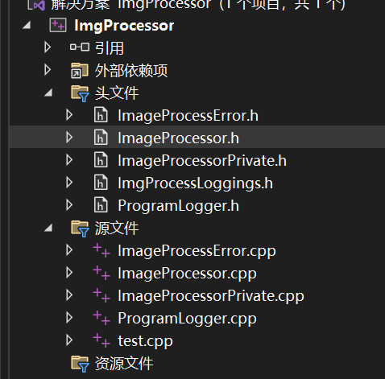
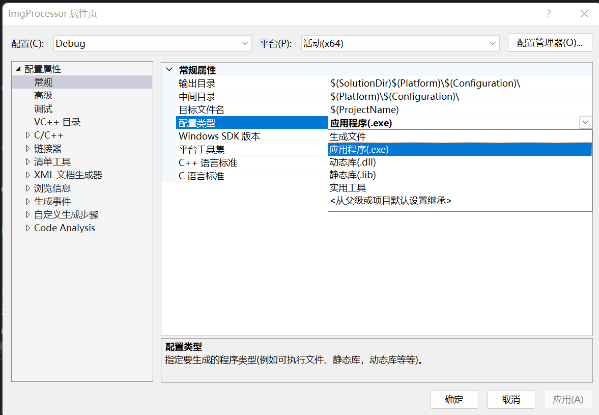
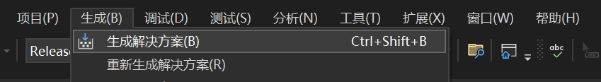
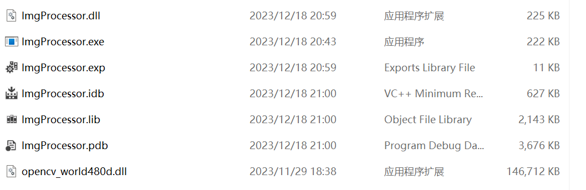
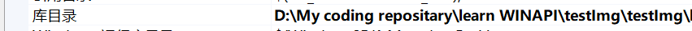
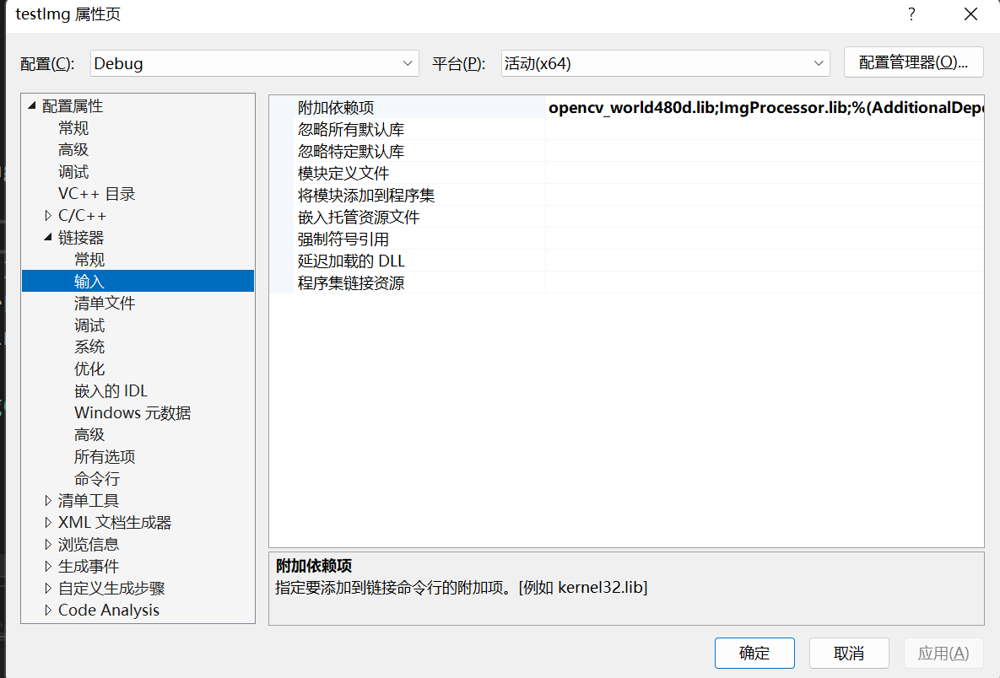
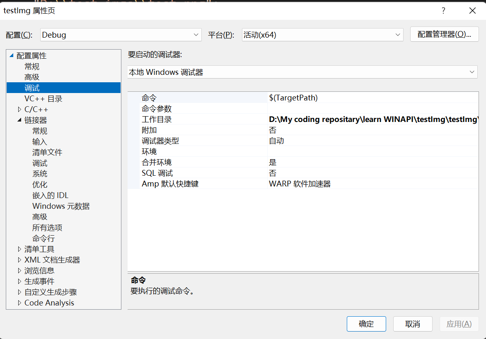
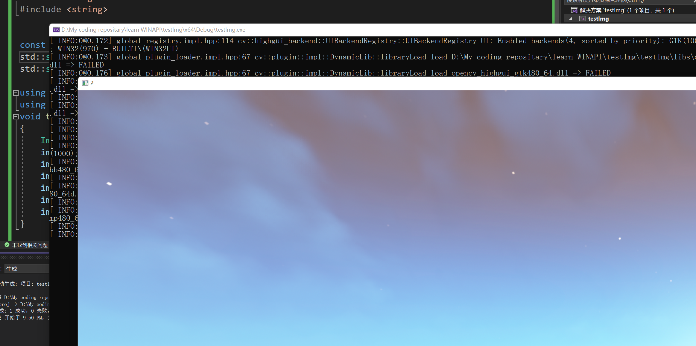
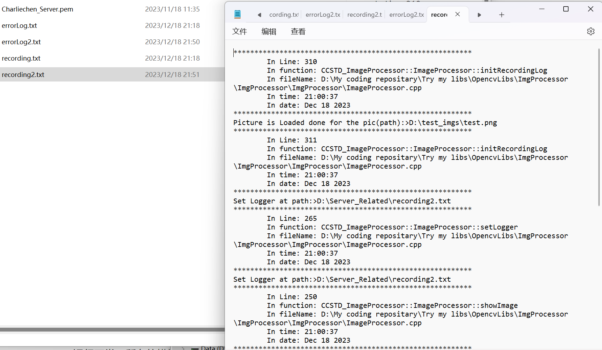

Visual Studio编译静，动态链接库指南备忘
Visual Studio编译与使用静，动态链接库指南备忘
跟Microsoft的Visual Studio接触了这么久，第一次打算写点备忘在这里，这篇博客是记录在VS下如何编译与使用静，动态链接库的指南。
最近，我封装了基于Opencv的基础图像操作，打算让Tesseract提高准确识别从而对Opencv进行简单的套壳封装。方便起见，我打算采用低耦合的动态链接库的方式处理。
首先，这是我的工程文件下的含有目录：

我的目标是
只使得
ImgProcessor这个类在动态库中是可见的，其他的符号并不可见（换而言之，无法直接使用，只可通过本人设计的Impl隔离层访问），我应该怎么做呢？
首先，给欲导出符号上buff: __dllexport
这招只适合在MSVC编译器底下玩，为了通用性，还需要判定这是否为MSVC编译器
#ifdef _MSV_VER 是一个微软预定义的宏，如果追求极强的通用性，用它来操作！这里我只是在玩自己的toys，没有必要给自己上难度（跑。
#define CCSTD_EXPORT __declspec(dllexport)
#ifdef __cplusplus // C++环境宏
#define CCSTD_FUNC_EXPORT extern "C" __declspec(dllexport)
#else
#define CCSTD_FUNC_EXPORT __declspec(dllexport)
#endif
extern "C"是一个令人哭笑不得的选择，因为C++目前的ABI兼容貌似不太行，对于部分Modern C++特性，希望用在更加广泛的二进制平台有的时候会抽风，从而不得不投靠C的ABI接口，这个extern "C"就是在告诫编译器生成C Style的二进制接口（乐）
然后，给自己的类加上符号
class CCSTD_EXPORT ImageProcessor
{
public:
// ... 我们就想要导出这个类，那就直接给这个函数加上修饰符即可，如果想要单独的给函数加上导出符号，请务必使用
CCSTD_FUNC_EXPORT C++环境下，它会被展开成：
extern "C" __declspec(dllexport) 也就是C式的兼容性强的接口。（比如模板等高级特性）
template<typename T>
void CCSTD_FUNC_EXPORT someFunc(T* t);转向调整项目生成类型

注意自己的配置：Debug or Release? x86 or x64?
然后选择自己的配置类型，比如说我打算生成debug模式下的静态库和动态库，就依次调整生成之（点生成->生成解决方案，如果希望清理，那就点击重新生成解决方案 ）。

现在到自己的生成文件路径下面

（这个opencv_world480d.dll是我自己提前编译得到的，exe文件是我自己测试的时候生成的，实质上我们需要的就是lib文件和dll文件）
好，把这两个文件拉到测试环境里去
使用lib和dll
新开一个空工程，然后开始配置
如果你的dll或者lib文件需要包含头文件但是你觉得一个一个加入工程多多少少有点抽象和烦人，那么就在这里配置你的包含文件的文件夹位置，如果你配置过opencv了，轻车熟路。
下面就是配置静态库：

这个库目录指代静态库，我们需要填写这些静态库集中（没集中我建议手动集中一下，方便应用管理）
然后，我们在这里：

添上所有的依赖库的符号，当然，可以自己脑子跑一遍看看填写多少库自己的代码都可以在连接时消除undefined而进行选择，这里是因为本人编译自己的库时并不打算把自己的依托东西同另一个巨无霸粘在一起，且没有极其严苛的保密需求，所以就需要告知原本的底层库的位置
下一步就是调整工作环境，我看很多垃圾教程都嚷嚷着把自己的dll扔到Windows32或者是环境变量，我的评价是乐，完全不需要污染自己的电脑，而是在这里：

可以在这里设置工作目录，目录是自己的动态库的集中位置文件夹，填写完毕后，可以尝试启动一下了：

运行正常，所有的模块都被打包进来了（比如说我自己手搓的ProgramLogger模块）
